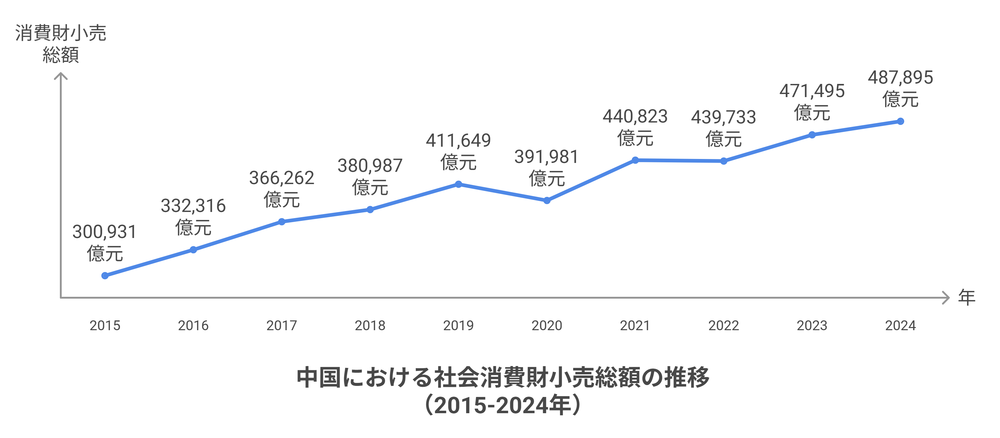

日本製品の海外展開・販売代理（中国、ベトナム）
ご提携の流れ
御社のブランドと製品の現地での認知度を高め、長期的な協力関係を通じて双方の持続的な成長を実現
-
ステップ１：商談
貴社製品を調査し、海外市場分析を行った上で、販売戦略の概要をご提案します。 -
ステップ２：契約
輸入国での独占代理店契約を締結します。なぜ独占代理なのか？御社のブランドや製品を現地市場に浸透させ、より多くの消費者に知っていただくため、当社はオフライン・オンライン広告や自社の卸売・小売チャネルを活用し、積極的にプロモーションを行います。そのため、当社が多額の初期投資を全て負担します。弊社の理念は、御社のブランドと製品の現地での認知度を高め、長期的な協力関係を通じて双方の持続的な成長と成功を実現することです。 -
ステップ３：輸出入手続き
輸出入通関手続きは当社が全て担当し、貴社には衛生・検疫・検査・ブランド許諾等の必要書類をご用意いただきます。 -
ステップ４：発注開始
当社より発注書を発行し、代金をお支払いします。貴社は指定港または倉庫へ納品、もしくは当社指定物流会社が集荷します。 -
ステップ５：継続的なフィードバック
海外での販促・販売状況を定期的にご報告し、貴社の生産計画や商品改善に役立てていただきます。品質問題が発生した場合は、アフターサービスやリコール対応を行う可能性があります。
当社の強み
御社が自社で輸出・海外展開を行う場合より
-
確立された販売チャネルの１（オフライン）
日本でいう成城石井のような高級志向のスーパーマーケットで、日本製品の品揃えが非常に豊富です。
中産階級以上や公務員層を中心とした購買力の高い顧客が多く、品質に優れた日系ブランド商品に対する信頼と人気が根強くあります。代表的な店舗：Ole'精品超市、BHG Market Place（北京華聯精品超市）、BLT（北京樂天瑪特）中国の都市部にある大規模な住宅小区（マンション・団地）を対象とした販売チャネルです。
住民による共同購入やコミュニティ内の団体購買が活発で、日用品や家庭用品の販売において高い集客力と購買力を持つ市場として注目されています。「小区」（しょうく）とは、中国における集合住宅の敷地を囲む単位で、塀やフェンスで囲まれ、入り口が制限されています。敷地内には、公園や店舗が設けられ、一つの生活圏を形成しています。会員制の大規模量販型スーパーマーケットで、主に中〜高所得層やファミリー層をターゲットとしています。
高品質・大容量の商品や輸入品、日本ブランド商品が特に人気で、顧客の購買力が高く、リピート率にも優れています。代表的な店舗：山姆（Sam's Club）、Costco高感度な顧客層をターゲットとする高級ホテル・レストラン向けに、品質とブランド力に優れた食品・調味料・ミネラルウォーターをご提供しております。
ギフト用途にも適した高級食材や酒類、日本産の天然ミネラルウォーターなど、洗練された空間にふさわしい商品を厳選し、提案いたします。
味わい・安全性・ストーリー性を重視し、顧客満足度の向上に貢献いたします。代表的なホテル：Shangri-La、Ritz-Carlton、Peninsula高級レストランが多く、使用する食材には品質やブランドイメージが強く求められます。
そのため、日本産の高級食材や調味料、日本産ミネラルウォーターは、こうした店舗に最適です。 -
確立された販売チャネルの２（オンライン）
幅広いユーザー層に対応した最大手のオンラインモール。ブランド認知度の向上や大規模販売に適しており、広告投資やマーケティング施策と組み合わせることで高い集客効果が期待できます。代表的なプラットフォーム：天猫（Tmall）、京東（JD.com）SNSやチャットアプリを活用し、ファン・コミュニティベースで商品を紹介・販売するチャネル。リピート率が高く、ブランドの信頼関係構築に効果的です。特に中国では「私域流量（自社でコントロールできる顧客層）」の活用が重要視されています。代表的なプラットフォーム：WeChat（微信）、小紅書（RED / Xiaohongshu）、抖音（Douyin）※ライブ配信機能も含む。特定カテゴリー（食品、美容、母子、健康など）に特化した専門モール。ニッチ市場における認知拡大やターゲットユーザーへの高精度アプローチに優れています。代表的なプラットフォーム：盒馬鮮生（Hema：食品・生鮮）、考拉海購（Kaola：輸入品全般）、1919（酒類専門）、媽媽網（Mama.cn：母子）
-
御社は広告・営業の初期費用負担なく
貴社のブランドや製品を現地市場に浸透させ、より多くの消費者に認知していただくために、当社はオンライン・オフライン両面での広告施策に加え、自社が保有する卸売・小売チャネルを最大限に活用し、積極的なプロモーション活動を展開いたします。
また、これらの施策にかかる初期投資は、すべて当社が負担いたしますので、貴社には安心して市場開拓に取り組んでいただけます。弊社は、貴社ブランドおよび製品の現地における認知度向上を支援し、長期的なパートナーシップを通じて、双方にとって持続可能な成長と成功の実現を目指しております。これが弊社の理念であり、活動の根幹を成すものです。 -
現地法規制・通関手続きはすべて当社にお任せ
日本企業との国内契約で完結するため、安心して取引が可能です。現地での法的リスクを最小限に抑えながら、効率的なビジネス展開を実現します。
現地の法規制に完全準拠した成分表示とパッケージングを実現します。食品衛生法、化粧品規制、医薬品規制など、各業界の規制に対応し、スムーズな市場参入を対応します。現地の市場特性を熟知した上で、最適な販売チャネルを構築します。小売店、ECプラットフォーム、卸売業者など、多様なチャネルを活用し、最大の販売機会を創出します。
現地のトレンドを踏まえた効果的なマーケティング戦略を展開します。KOLとの協業、SNSマーケティング、イベント企画など、多角的なアプローチで製品の認知度と売上を向上させます。
中国市場について
都市部を中心に中間層の台頭が著しく、単なる「価格」ではなく「品質」「安全性」「信頼性」
-
中国消費財小売総額
年 社会消費財小売総額
（億元）前年比増減率
（％）備考 2015 300,931 10.7 消費市場は安定成長、ECが急速に発展。 2016 332,316 10.4 都市と農村の消費格差が縮小、サービス消費が台頭。 2017 366,262 10.2 消費の高度化が顕著、オンラインとオフラインの融合が加速。 2018 380,987 9.0 消費増加率が鈍化、自動車消費が低迷。 2019 411,649 8.0 消費構造が最適化、サービス消費の割合が上昇。 2020 391,981 -3.9 新型コロナの影響でオフライン消費が大幅減少。 2021 440,823 12.5 経済回復により消費需要が急速に回復。 2022 439,733 -0.2 コロナ再流行で消費市場が変動。 2023 471,495 7.2 消費が徐々に回復、オンライン小売とサービス消費が増加。 2024 487,895 3.5 消費市場は安定成長、新業態が牽引。 ※各年の社会消費財小売総額は、1億元＝0.02兆円換算で
2015年：約6.0兆円相当
2016年：約6.6兆円相当
2017年：約7.3兆円相当
2018年：約7.6兆円相当
2019年：約8.2兆円相当
2020年：約7.8兆円相当
2021年：約8.8兆円相当
2022年：約8.8兆円相当
2023年：約9.4兆円相当
2024年：約9.8兆円相当データ出典：中国国家統計局年次報告書（www.stats.gov.cn） -
食品安全と信頼の課題
近年、中国では食品、飲料、医薬品などの安全問題が相次いで発生し、消費者の国産品に対する信頼が大きく揺らいでいます。度重なる事件により、「何を食べても安心できない」という不安が社会全体に広がっています。
ベトナム市場について
経済発展と所得向上に伴う変化
-
経済発展と所得向上に伴う変化
経済成長により中間所得層が急速に拡大し、価格だけでなく品質やブランドを重視した「選択的消費」へとシフトしています。
ベトナム統計総局（GSO）の発表によると、2024年の国内における商品およびサービスの小売売上高は、前年と比べて9％増加し、経済回復と消費需要の拡大を反映する結果となりました。特に都市部での高付加価値商品の販売が好調で、輸入品や高品質製品への需要も引き続き増加しています。
ニュース報道を見るデータ出典：ベトナム統計総局（GSO）（www.nso.gov.vn） -
都市部を中心としたプレミアム志向の高まり
ホーチミンやハノイなどの都市部では、輸入品や高品質・高付加価値商品の需要が年々高まっており、日本製品への信頼も根強いです。
-
若年層を中心としたデジタル消費の浸透
Z世代・ミレニアル世代を中心に、スマートフォン経由のオンラインショッピングやSNSを通じた商品選定が一般化しており、OMO戦略（オンラインとオフラインの融合）が重要視されています。
-
健康志向・安全志向の強まり
食品・飲料・日用品などの分野では「健康・オーガニック・無添加」などへの関心が高まっており、信頼性の高い製品が選ばれる傾向にあります。
ベトナム政府は、急増する偽造商品や密輸、オンライン詐欺に対し、対策を強化しています。2025年には、偽ブランド商品1,100件、関連する詐欺・密輸事件が25,100件以上摘発され、食品や健康サプリの偽造流通も確認されています。
政府は、これらが国民の健康や社会秩序を脅かす深刻な問題であるとし、徹底した取り締まりを指示しました。
また、一部当局者による衛生証明書の不正取得も発覚し、食の信頼性に対する懸念が高まっています。とくにオンライン販売チャネルにおける管理体制の強化が急務とされています。
ニュース報道を見る -
ギフト・見栄消費の文化
ベトナムでは贈答文化が根強く、年末年始や祝日などのタイミングで高級品や輸入品のギフト需要が急増する傾向があります。
日本製品の強みとチャンス
「品質」「安全性」「信頼性」
-
特に以下の特徴を持つ日本製品は、中国・ベトナム市場で極めて高い競争力を有しています：
- 安全性・無添加・高品質といった日本ならではの製造基準
- 正確な成分表示とトレーサビリティ
- "日本製"というブランド自体が信頼の証とみなされる文化背景
- 清潔感・機能性・細部へのこだわり
ActionForは、こうした日本の誇るべき製品を、適切な現地規制対応・流通整備・販促支援を通じて、中国・ベトナム市場に安心かつ効率的に届ける体制を整えております。今こそ、日本メーカー様の持つ"ほんものの価値"を海外に届ける絶好のタイミングです。弊社は御社とともに、優れた日本製品を必要とする現地消費者の元へ確実に届け、信頼と成果に繋げることをお約束いたします。